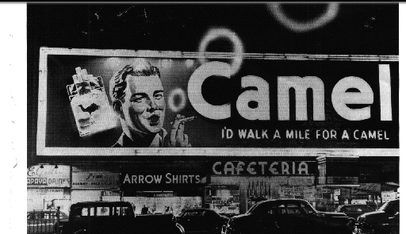

I'd walk a mile for a Camel.

The above photograph is of times square. It was taken (without permission)
from Smithsonian magazine Feb 1998, page 43, in their
article about Times Square. The modern Times Square has a cup of
coffee generating steam instead of a smoker blowing smoke. Does this
say that coffee is the modern approved of addiction?